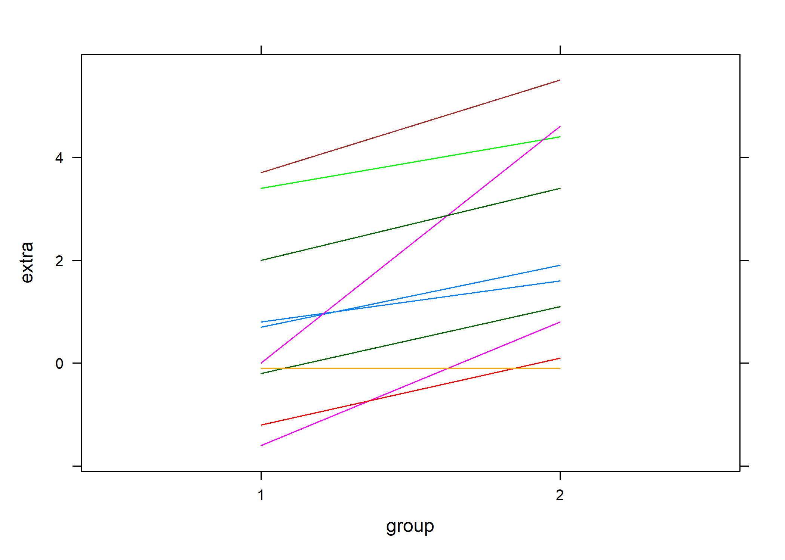
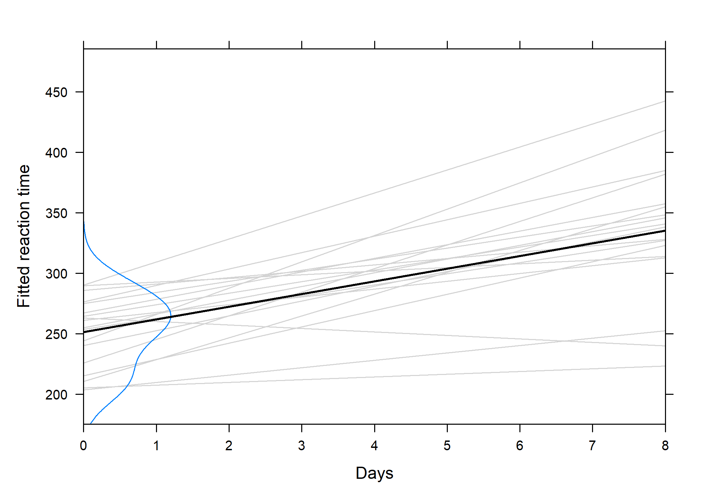
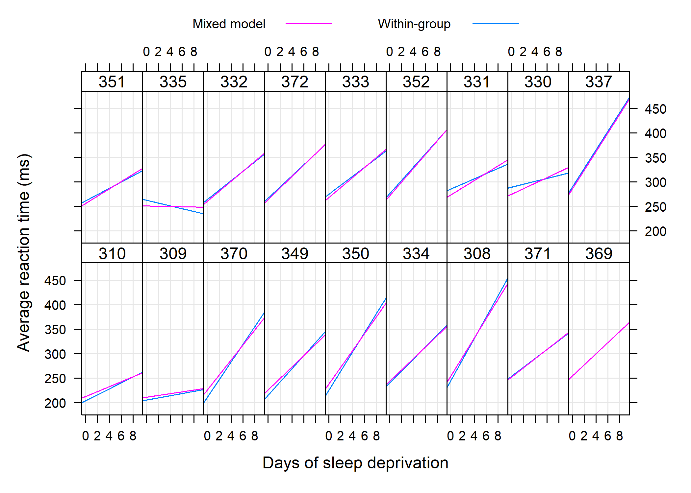
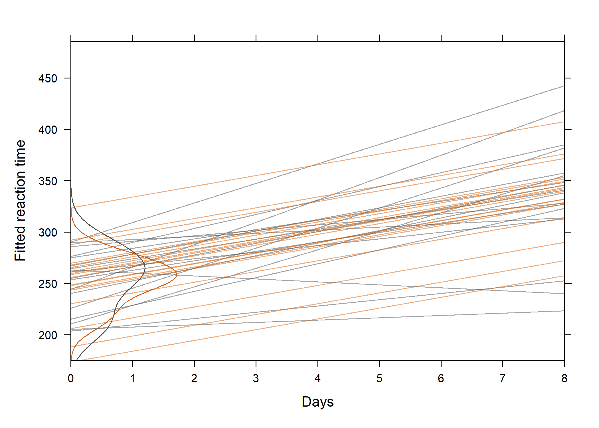

Modèles à effets aléatoires (modèles mixtes et GEE)
De la régression linéaire aux modèles mixtes
Généralités
Dans un modèle de régression classique, il s’agit d’étudier la liaison statistique entre une variable à expliquer Y et des variables explicatives X non aléatoire. Soit yi la réponse de l’individu i et xi les valeurs prises par les variables explicatives pour cet individu. La relation entre X et Y peut s’écrire sous la forme :
yi = α + βxi + εi
où εi est une variable aléatoire distribuée selon une loi normale d’espérance nulle et représentant les résidus du modèle ou erreurs, α correspond à ce qu’on appelle l’intercept et β représente les coefficients du modèle.
Dans un modèle classique, les erreurs sont supposées être indépendantes et identiquement distribuées selon une loi normale. Or, ce n’est pas le cas dans un certain nombres de cas : lorsque plusieurs réponses sont disponibles pour le même individu pour un même xi (cas des mesures répétées), lorsque plusieurs observations sont naturellement groupées (par exemple, les membres d’une famille, des jumeaux homozygotes, des patients dans une même unité de soins, etc.), ou lorsque l’on collecte des données au cours du temps chez un même individu. Les modèles mixtes ou modèles à effets aléatoires permettent de prendre en considération ce type d’information et de généraliser l’approche déjà connue pour l’estimation des paramètres d’un modèle de régression linéaire classique (pour observations indépendantes).

Modèles mixtes (GLMM)
Par rapport au modèle linéaire (généralisé) classique, les modèles mixtes (GLMM dans la littérature anglo-saxonne) considèrent, en plus des effets fixes, des effets aléatoires qui permettent de refléter la corrélation entre les unités statistiques. Ce type de données en cluster s’observe lorsque des unités statistiques sont groupées ensemble (étudiants dans des écoles), en raison d’une corrélation intra-unité (données longitudinales) ou un mélange des deux (performance mesurée au cours du temps pour différents groupes de sujets).
On rattache ce type de modèle aux approches conditionnelles, par opposition aux approches marginales telles que les GLS ou les GEE, décrites dans la deuxième partie de ce chapitre. Les modèles mixtes ne se limitent pas à un seul niveau de cluster, et il peut exister une hiérarchie de clusters imbriqués les uns dans les autres, d’où l’appelation de modèles hiérarchiques dans certains cas de figure.
En ce qui concerne les effets fixes versus aléatoires, il existe peu de définition consensuelle, mais on peut considérer le schéma suivant pour décider si un effet doit être considéré comme fixe ou aléatoire :

L’analyse des données corrélées ou appariées permet de mettre en lumière l’importance de tenir compte de la structure de corrélation intra-unité. Voici l’exemple célèbre des données sur le sommeil utilisé par W. Gosset pour présenter son test de Student :
Welch Two Sample t-test
data: extra by group
t = -1.8608, df = 17.776, p-value = 0.07939
alternative hypothesis: true difference in means is not equal to 0
95 percent confidence interval:
-3.3654832 0.2054832
sample estimates:
mean in group 1 mean in group 2
0.75 2.33
Paired t-test
data: extra by group
t = -4.0621, df = 9, p-value = 0.002833
alternative hypothesis: true difference in means is not equal to 0
95 percent confidence interval:
-2.4598858 -0.7001142
sample estimates:
mean of the differences
-1.58 Le résultat du test dans le premier cas de figure, qui ignore complètement l’appariement, se révèle non significatif alors que la prise en compte de l’appariement indique qu’il existe bien une différence significative dans le gain de sommeil selon le type d’hypnotique administré.
Ignorer la corrélation intra-unité résulte en test généralement moins puissant sur le plan statistique. On sait que dans le cas où deux variables aléatoires, X1 et X2, ne sont pas indépendantes, la variance de leur différence vaut :
Var(X1 − X2) = Var(X1) + Var(X2) − 2Cov(X1, X2).
Considérer que Cov(X1, X2) = 0 revient à sur-estimer la variance de la différence, dans la mesure où Cov(X1, X2) est généralement positive, soulignant le fait que les individus ayant un niveau plus élevé sur le premier niveau de la variable explicative ont généralement un niveau plus élevé que les autres sur le second niveau. On peut visualiser cette tendance très clairement avec les données “sleep” :
library(lattice)
library(gridExtra)
# lattice.options(default.theme=brewer.theme)
trellis.par.set(strip.background = list(col = "transparent"))
data(sleep)
xyplot(extra ~ group, data = sleep, groups = ID, type = "l")
Cas de l’ANOVA à mesures répétées
Voici des données concernant l’excès de graisse dans les scelles suite à une défaillance des enzymes de digestion dans l’intestin. Des suppléments en enzyme pancréatique permettent de corriger ce problème, la question étant de déterminer quel est le meilleur mode d’administration (tablette, capsule, enrobé) :

Il n’y a qu’un seul prédicteur, le type de comprimé, qui est attaché au sujet et à la période d’administration dans le temps (répétition sur un même sujet). On dispose de plusieurs manières de décomposer la variance totale :
fat <- data.frame(fecfat = c(44.5, 33, 19.1, 9.4, 71.3, 51.2,
7.3, 21, 5, 4.6, 23.3, 38, 3.4, 23.1, 11.8, 4.6, 25.6, 36,
12.4, 25.4, 22, 5.8, 68.2, 52.6), pilltype = gl(4, 6, labels = c("None",
"Tablet", "Capsule", "Coated")), subject = gl(6, 1))
summary(aov1 <- aov(fecfat ~ pilltype, data = fat)) # (M1) one-way ANOVA Df Sum Sq Mean Sq F value Pr(>F)
pilltype 3 2009 669.5 1.862 0.169
Residuals 20 7193 359.7 Df Sum Sq Mean Sq F value Pr(>F)
pilltype 3 2009 669.5 6.257 0.005741 **
subject 5 5588 1117.7 10.446 0.000182 ***
Residuals 15 1605 107.0
---
Signif. codes:
0 '***' 0.001 '**' 0.01 '*' 0.05 '.' 0.1 ' ' 1
Error: subject
Df Sum Sq Mean Sq F value Pr(>F)
Residuals 5 5588 1118
Error: Within
Df Sum Sq Mean Sq F value Pr(>F)
pilltype 3 2009 669.5 6.257 0.00574 **
Residuals 15 1605 107.0
---
Signif. codes:
0 '***' 0.001 '**' 0.01 '*' 0.05 '.' 0.1 ' ' 1Voici les résultats que l’on obtient avec ces trois modèles résumés dans un tableau de synthèse :

Le premier modèle, qui suppose les observations indépendantes, ne supprime pas la variance entre sujets (presque 78~% de la variance résiduelle). Les deux modèles suivants, M2 et M3, incorpore chacun des effets spécifiques aux sujets :
$$
y_{ij} = \mu + \text{subject}_i + \text{pilltype}_j + \varepsilon_{ij},\quad \varepsilon_{ij}\sim{\cal N}(0,\sigma_{\varepsilon}^2).
$$
Dans le troisième modèle (M3), on suppose de plus que $\text{subject}_i\sim{\cal N}(0,\sigma_{s}^2)$, indépendant de εij. L’inclusion de termes aléatoires sujet-spécifique permet de modéliser différents types de corrélation intra-unité au niveau de la variable réponse. Considérons la corrélation entre des mesures prises successivement chez le même individu. On sait que :
$$ \text{Cor}(y_{ij},y_{ik})=\frac{\text{Cov}(y_{ij},y_{ik})}{\sqrt{\text{Var}(y_{ij})}. $$
Puisque μ et pilltype sont fixes, et que εij ⊥ subjecti, on a donc :
$$
\begin{align}
\text{Cov}(y_{ij},y_{ik}) & = \text{Cov}(subject_i,subject_i) \cr
& = \text{Var}(subject_i) \cr
& = \sigma_{s}^2,
\end{align}
$$
et les composantes de variance résultent du fait que Var(yij) = Var(subjecti) + Var(εij) = σs2 + σε2, que l’on suppose vrai pour toutes les observations. De sorte qu’on arrive à la quantité que nous recherchions, à savoir la corrélation entre deux mesures, j et k, prises chez le même individu i :
$$ \text{Cor}(y_{ij},y_{ik})=\frac{\sigma_{s}^2}{\sigma_{s}^2+\sigma_{\varepsilon}^2}. $$
Cette valeur reflète la proportion de la variance totale qui est dûe aux individus eux-mêmes. On la dénomme également corrélation intraclasse, ρ, et elle permet de quantifier le degré de proximité entre les observations de différents individus (on parle également de similarité intra-cluster) :
- la variabilité entre sujets augmente ou diminue simultanément toutes les observations d’un même sujet ;
- la structure de variance-covariance du modèle ci-dessus est appelée “symétrie composée”.
On retrouve alors l’égalité σ2 = σs2 + σε2, qui revient à :
$$
\begin{bmatrix}
\sigma_{s}^2+\sigma_{\varepsilon}^2 & \sigma_{s}^2 & \sigma_{s}^2 & \sigma_{s}^2 \cr
\sigma_{s}^2 & \sigma_{s}^2+\sigma_{\varepsilon}^2 & \sigma_{s}^2 & \sigma_{s}^2 \cr
\sigma_{s}^2 & \sigma_{s}^2 & \sigma_{s}^2+\sigma_{\varepsilon}^2 & \sigma_{s}^2 \cr
\sigma_{s}^2 & \sigma_{s}^2 & \sigma_{s}^2 & \sigma_{s}^2+\sigma_{\varepsilon}^2 \cr
\end{bmatrix} = \sigma^2
\begin{bmatrix}
1 & \rho & \dots & \rho \cr
\rho & 1 & & \rho \cr
\vdots & & \ddots & \vdots \cr
\rho & \rho & \dots & 1 \cr
\end{bmatrix}
$$
L’estimation de ρ passe par l’observation suivante : les observations prises sur un même sujet sont modélisés via leur effet aléatoire (sujet-spécifique) partagé. En utilisant le modèle à intercept aléatoire considéré plus haut, il est possible d’estimer ρ à l’aide du package nlme :
Approximate 95% confidence intervals
Fixed effects:
lower est. upper
(Intercept) 21.58081 38.083333 54.585860
pilltypeTablet -34.27929 -21.550000 -8.820713
pilltypeCapsule -33.39595 -20.666667 -7.937380
pilltypeCoated -19.74595 -7.016667 5.712620
attr(,"label")
[1] "Fixed effects:"
Random Effects:
Level: subject
lower est. upper
sd((Intercept)) 8.001119 15.89557 31.57924
Within-group standard error:
lower est. upper
7.232394 10.344027 14.794394 sigma.s <- as.numeric(VarCorr(lme.fit)[1, 2])
sigma.eps <- as.numeric(VarCorr(lme.fit)[2, 2])
sigma.s^2/(sigma.s^2 + sigma.eps^2)[1] 0.7025064On notera qu’une estimation par maximum de vraisemblance restreint (REML) est utilisée par défaut : les effets aléatoires sont estimés après avoir enlevé les effets fixes. On retiendra également que les tests de rapport de vraisemblance sur les termes aléatoires de ce genre de modèle (H0: σ2 = 0) sont conservateurs.
Il est toujours possible de retrouver ρ à partir du tableau d’ANOVA et des composantes de variance :
ms <- anova(lm(fecfat ~ pilltype + subject, data = fat))[[3]]
vs <- (ms[2] - ms[3])/nlevels(fat$pilltype)
vr <- ms[3]
vs/(vs + vr)[1] 0.7025066Notons que l’on pourrait également procéder de même avec une approche (marginale) GLS :
gls.fit <- gls(fecfat ~ pilltype, data = fat, corr = corCompSymm(form = ~1 |
subject))
anova(gls.fit)Approximate 95% confidence intervals
Coefficients:
lower est. upper
(Intercept) 21.93296 38.083333 54.233702
pilltypeTablet -34.00763 -21.550000 -9.092367
pilltypeCapsule -33.12430 -20.666667 -8.209034
pilltypeCoated -19.47430 -7.016667 5.440966
attr(,"label")
[1] "Coefficients:"
Correlation structure:
lower est. upper
Rho 0.2722222 0.7025074 0.9143687
attr(,"label")
[1] "Correlation structure:"
Residual standard error:
lower est. upper
11.64063 18.96494 30.89772 On pourra vérifier que la structure ed variance-covariance imposée se reflète bien dans les données prédites par un tel modèle :
fat$pred <- predict(lme.fit)
p1 <- xyplot(fecfat ~ reorder(pilltype, fecfat), data = fat,
groups = subject, type = "a", xlab = "Pill type", ylab = "Fecal fat (g/day)",
scales = list(y = list(at = seq(0, 80, by = 20))))
p2 <- xyplot(pred ~ reorder(pilltype, fecfat), data = fat, groups = subject,
type = "a", xlab = "Pill type", ylab = "Predicted fecal fat (g/day)",
scales = list(y = list(at = seq(0, 80, by = 20))))
grid.arrange(p1, p2, nrow = 1)Quelques remarques :
- pour un dessin expérimental équilibré, la variance résiduelle d’une ANOVA à effet intra (cas des mesures répétées) et celle d’un modèle à intercept aléatoire sont identiques (l’estimateur REML est équivalent au carré moyen de l’ANOVA) ; de même les effets liés au type de comprimé seront identiques aux moyennes marginales ;
- le test de la significativité des effets fixes peut être réalisé à l’aide de l’ANOVA (tests F) ou par comparaison de modèles emboîtés ; dans ce dernier cas, il est nécessaire d’estimer les paramètres du modèle mixte par maximum de vraismeblance et non par REML puisque les modèles emboîtés vont inclure des effets fixes différents :
lme.fit <- update(lme.fit, method = "ML")
lme.fit0 <- update(lme.fit, fixed = . ~ -pilltype)
anova(lme.fit, lme.fit0)D’autres matrices de variance-covariance peuvent être retenues pour les modèles, en fonction du type de dessin expérimental. Le modèle à intercept aléatoire nous assure que la matrice e variance-covariance sera correctement contrainte. Dans le cas de l’ANOVA à mesures répétées, il est d’usage d’appliquer une correction de sphéricité (Greenhouse-Geisser ou Huynh-Feldt) ou d’utiliser une MANOVA mais celle-ci possède moins de puissance statistique. Les modèles mixtes restent donc plus souples dans la mesure où ils permettent de faire de l’inférence sur la structure de corrélation et de réaliser des comparaisons de modèle.
Cas des données longitudinales
Les données suivantes sont tirées du package lme4:
Average reaction time per day for subjects in a sleep deprivation study. On day 0 the subjects had their normal amount of sleep. Starting that night they were restricted to 3 hours of sleep per night. The observations represent the average reaction time on a series of tests given each day to each subject.
Loading required package: Matrixdata(sleepstudy)
xyplot(Reaction ~ Days | Subject, data = sleepstudy, layout = c(9,
2), type = c("g", "p", "r"), index.cond = function(x, y) coef(lm(y ~
x))[1], xlab = "Days of sleep deprivation", ylab = "Average reaction time (ms)")Considérons dans un premier temps de simples régressions linéaires pour chaque sujet :
reg.subj <- lmList(Reaction ~ Days | Subject, sleepstudy)
reg.subj.df <- data.frame(lapply(reg.subj, coef))
apply(reg.subj.df, 1, quantile, prob = c(0.25, 0.75)) (Intercept) Days
25% 229.4167 6.194548
75% 273.0255 13.548395(Intercept) Days
251.40510 10.46729 Voici ce que cela donne visuellement :
intcpt.dens <- density(as.numeric(reg.subj.df[1, ]), adj = 1.2)
len <- length(intcpt.dens$x)
xyplot(Reaction ~ Days, data = sleepstudy, xlim = c(0, 8), ylab = "Fitted reaction time",
scales = list(x = list(at = seq(0, 8, by = 1))), panel = function(x,
y) {
apply(reg.subj.df, 2, panel.abline, col = "lightgrey")
panel.lines(x = c(intcpt.dens$y * 100, rep(0, len)),
y = c(intcpt.dens$x, rev(intcpt.dens$x)))
panel.lmline(x, y, col = "black", lwd = 2)
})
On voit clairement que les sujets présentent des profils d’évolution différents et l’équation de la droite de régression globale est : ỹ = 251.4 + 10.5x.. La question qui se pose est : dans quelle mesure cette équation capture t-elle la tendance observée entre les différents sujets ?
Les estimations par moindres carrés sujet-spécifique sont bel et bien correctes mais l’erreur standard des paramètres de ces modèles sont biaisés puisque l’on suppose l’indépendance des observations. Les prédictions seront également incorrectes.
Voici quelques modèles à effets aléatoires plausibles pour ce type de données :
- Random-intercept model :
Reaction ~ Days + (1 | Subject) - Random-intercept and slope model :
Reaction ~ Days + (Days | Subject) - Uncorrelated random effects (intercept and slope) :
Reaction ~ Days + (1 | Subject) + (0 + Days | Subject)
lme.mod1 <- lmer(Reaction ~ Days + (1 | Subject), data = sleepstudy)
lme.mod2 <- lmer(Reaction ~ Days + (Days | Subject), data = sleepstudy)
lme.mod3 <- lmer(Reaction ~ Days + (1 | Subject) + (0 + Days |
Subject), data = sleepstudy)
anova(lme.mod1, lme.mod2, lme.mod3)refitting model(s) with ML (instead of REML)Concernant la prédiction des effets aléatoires, on retiendra que dans un modèle à effets aléatoires les coefficients de régression ne sont plus des paramètres et ils ne peuvent donc pas être estimés comme dans un modèle classique. de plus, leur espérance mathématique est nulle. Cela dit, il est toujours possible de reposer sur leur distribution a posteriori. En combinant les modes conditionnels des effets aléatoires et les estimés des effets fixes, on obtient ce que l’on appelle les modes conditionnels des coefficients intra-sujet (cf. mcmcsamp). Les valeurs prédites s’écriront donc :
$$ \tilde y_i= (\underbrace{\hat\beta_0}_{\small\text{Fixed}}+\underbrace{\phantom{{\hat\beta_0}}\kern-2.3ex\hat u_{0i}}_{\small\text{Random}}) + (\hat\beta_1+\hat u_{1i})x. $$
Il est assez facile de vérifier que les effets aléatoires prédits sont reliés aux effets fixes :
lm.mod1 <- aov(Reaction ~ Days + Subject, data = sleepstudy)
subj.fixef <- model.tables(lm.mod1, cterms = "Subject")[[1]]$Subject
ranef(lme.mod1)$Subject/subj.fixefdf <- coef(lmList(Reaction ~ Days | Subject, sleepstudy))
cc1 <- as.data.frame(coef(lme.mod2)[["Subject"]])
names(cc1) <- c("A", "B")
df <- cbind(df, cc1)
xyplot(Reaction ~ Days | Subject, sleepstudy, layout = c(9, 2),
type = c("g", "r"), coef.list = df[, 3:4], panel = function(...,
coef.list) {
panel.xyplot(...)
panel.abline(as.numeric(coef.list[packet.number(), ]),
col.line = trellis.par.get("superpose.line")$col[2],
lty = trellis.par.get("superpose.line")$lty[2])
}, index.cond = function(x, y) coef(lm(y ~ x))[1], xlab = "Days of sleep deprivation",
ylab = "Average reaction time (ms)", key = list(space = "top",
columns = 2, cex = 0.8, text = list(c("Mixed model",
"Within-group")), lines = list(col = trellis.par.get("superpose.line")$col[2:1],
lty = trellis.par.get("superpose.line")$lty[2:1])))
Les valeurs prédites d’un modèle mixte peuvent également être vues comme des estimateurs “shrinkage”. Dans les cas les plus simples, le coefficient de régularisation revient à :
$$ \tau = \frac{\sigma_u^2}{\sigma_u^2+\sigma_{\varepsilon}^2/n_i}, $$
où ni désigne la taille du cluster i. Dans le cas présent, τ = 37.12/(37.12 + 31.02/10) = 0.935. Il y aura peu de régularisation lorsque les unités statistiques sont très différentes ou que les mesures sont peu précises, ou dans le cas des grands échantillons.
Random effects: Reaction Days Subject pred
Groups Name Variance Std.Dev. 1 249.5600 0 308 292.1888
Subject (Intercept) 1378.18 37.124 2 258.7047 1 308 302.6561
Residual 960.46 30.991 3 250.8006 2 308 313.1234
Number of obs: 180, groups: Subject, 18 4 321.4398 3 308 323.5907
...
Fixed effects: 177 334.4818 6 372 332.3246
Estimate Std. Error t value 178 343.2199 7 372 342.7919
(Intercept) 251.4051 9.7459 25.80 179 369.1417 8 372 353.2591
Days 10.4673 0.8042 13.02 180 364.1236 9 372 363.7264intcpt.dens2 <- density(as.numeric(df[, 3]), adj = 1.2)
cc2 <- as.data.frame(coef(lme.mod1)[["Subject"]])
df[, 3:4] <- cc2
xyplot(Reaction ~ Days, data = sleepstudy, xlim = c(0, 8), ylab = "Fitted reaction time",
scales = list(x = list(at = seq(0, 8, by = 1))), panel = function(x,
y) {
apply(df[, 1:2], 1, panel.abline, col = "grey30", alpha = 0.5)
apply(df[, 3:4], 1, panel.abline, col = "#D95F02", alpha = 0.5)
panel.lines(x = c(intcpt.dens$y * 100, rep(0, len)),
y = c(intcpt.dens$x, rev(intcpt.dens$x)), col = "grey30")
panel.lines(x = c(intcpt.dens2$y * 100, rep(0, len)),
y = c(intcpt.dens2$x, rev(intcpt.dens2$x)), col = "#D95F02")
})
Cas des données corrélées discrètes
Approche GEE
Le cas des données discrètes pose en plus le problème du choix de la distribution pour la variable réponse (ou les erreurs). Une distribution binomiale ou multinomiale convient mieux aux cas où la variable modélisée correspond à un choix binaire ou à plus de deux catégories de réponse. De plus, le choix de la stratégie de modélisation influence également les conclusions que l’on peut tirer d’une étude. Comme on l’a vu plus haut, les modèles linéaires mixtes généralisés permettent d’estimer les paramètres sujet-spécifiques d’un modèle de régression en considérant des effets fixes et/ou aléatoires, éventuellement en considérant différentes structures de corrélation. Une alternative consiste à modéliser directement les effets moyens des facteurs fixes, sans se soucier des effets individuels, en supposant toutefois une matrice de corrélation de travail qui permette de rendre compte de la corrélation intra-unité. Cette approche est connue sous le terme Équations d’estimation généralisées (GEE dans la littérature anglo-saxonne).
En ce qui concerne la matrice de corrélation de travail, voici 4 solutions qui peuvent constituer notre modèle de variance. Le premier cas correspond à une matrice d’indépendance (ind), où toutes les observations sont indépendantes les unes des autres :
$$
\begin{pmatrix}
1 & 0 & \cdots & 0 \cr
0 & 1 & \cdots & 0 \cr
\vdots & \vdots & \ddots & \vdots \cr
0 & 0 & \cdots & 1
\end{pmatrix}
$$
On peut également considérer le cas d’une structure de corrélation symétrique ou échangeable (exch), telle que celle assumée dans une ANOVA à mesures répétées (cf. hypothèse de symétrie composée, ou sphéricité), où ρ désigne la corrélation intraclasse :
$$
\begin{pmatrix}
1 & \rho & \cdots & \rho \cr
\rho & 1 & \cdots & \rho \cr
\vdots & \vdots & \ddots & \vdots \cr
\rho & \rho & \cdots & 1
\end{pmatrix}
$$
Une structure plus libérale consiste à supposer que les corrélations intra-unités sont libres de varier d’une unité à l’autre, et sont donc non structurées (uns) :
$$
\begin{pmatrix}
1 & \rho*{1,2} & \cdots & \rho*{1,t} \cr
\rho*{1,2} & 1 & \cdots & \rho*{2,t} \cr
\vdots & \vdots & \ddots & \vdots \cr
\rho*{1,t} & \rho*{2,t} & \cdots & 1
\end{pmatrix}
$$
Enfin, il est également possible, surtout dans le cas des données temporelles, de considérer une structure de corrélation sérielle auto-régressive (ar) :
$$
\begin{pmatrix}
1 & \rho & \cdots & \rho^{t-1} \cr
\rho & 1 & \cdots & \rho^{t-2} \cr
\vdots & \vdots & \ddots & \vdots \cr
\rho^{t-1} & \rho^{t-2} & \cdots & 1
\end{pmatrix}
$$
Comment choisir une bonne matrice de corrélation de travail pour notre modèle GEE ? En règle générale, on testera le modèle avec deux matrices de corrélation (p.ex. exch et uns) pour vérifier si l’une des deux améliore sensiblement la qualité de l’ajustement ou si une structure particulière est bien en accord avec notre modèle de variance présupposé. Voici également quelques critères globaux permettant de choisir l’une ou l’autre des structures de corrélation possibles :
- non structurée : peu d’unités par cluster, dessin expérimental équilibré ;
- échangeable : les unités d’un même cluster n’ont pas d’ordre particulier ;
- auto-régressive : afin de rendre compte d’une réponse variant avec le temps ;
- indépendante : lorsque le nombre de clusters est faible.
Reste la question d’évaluer dans quelle mesure la matrice de corrélation retenue est appropriée, ce qui revient à formuler un test de spécification. La sensibilité à la mauvaise spécification de la matrice de corrélation se reflètera directement dans la précision des paramètres estimés, ou de manière équivalente au niveau de l’amplitude de leurs erreurs standard. Les estimateurs de variance peuvent de surcroît être de type “model-based” (pratique dans le cas d’un faible nombre de clusters, le cas échéant il est toujours possible d’utiliser un estimateur “jacknife”) ou empiriques (on parle d’estimateurs “sandwich”, et ils sont asymptotiquement sans bias). Mais on retiendra que même si la matrice de corrélation est mal spécifiée, le modèle GEE fournit des résultats valides sous réserve que l’estimateur de variance sandwich soit utilisé.
Voici une petite illustration sur des données tirées d’une étude sur l’effet de la pollution de l’air sur la capacité respiratoires chez 537 enfants agés de 7 à 10 ans. Le fait que la mère fume et le temps constituent les prédicteurs d’intérêt, et la variable réponse est la présence d’un symptôme asthmatique (respiration sifflante). Les données collectées sont résumées dans le tableau suivant :

Tableau des résultats sur l’étude wheeziness
Le modèle considéré s’écrit :
$$
$$
et on parlera de “mean model” pour désigner un tel modèle dans lequel on s’intéresse à l’effet moyen (ici l’odds-ratio pour le status respiratoire) en fonction des prédicteurs, considérés à effets fixes dans ce modèle. Notons que ce modèle incorpore également un terme d’interaction (β3).
Il est également nécessaire de spécifier la fonction variance. Dans ce cas précis, on choisira 𝕍(μ) = ϕμ ⋅ (1 − μ), avec ϕ = 1 pour le paramètre d’échelle. On ne fait aucune hypothèse sur la distribution des observations.
Voici les données :
[1] 537smoke.yes <- xtabs(resp ~ id + age, subset(ohio, smoke == 1))
smoke.no <- xtabs(resp ~ id + age, subset(ohio, smoke == 0))
marg.means <- data.frame(resp = c(apply(smoke.yes, 2, mean),
apply(smoke.no, 2, mean)), age = gl(4, 1, labels = 7:10,
ordered = TRUE), smoke = gl(2, 4, labels = c("smoking", "not smoking")))
library(latticeExtra)Warning: package 'latticeExtra' was built under R version
3.6.1Loading required package: RColorBrewerp <- xyplot(resp ~ age, data = marg.means, group = smoke, type = c("l",
"g"), xlab = "Age (years)", ylab = "Wheeziness (%)", lwd = 2)
update(p, par.settings = custom.theme())Et voici pour l’application numérique avec le package geepack. Le premier modèle que nous considérerons figure une matrice de corrélation de travail de type symétrique :
fm <- resp ~ age * smoke
gee.fit <- geese(fm, id = id, data = ohio, family = binomial,
corstr = "exch", scale.fix = TRUE)
summary(gee.fit)
Call:
geese(formula = fm, id = id, data = ohio, family = binomial,
scale.fix = TRUE, corstr = "exch")
Mean Model:
Mean Link: logit
Variance to Mean Relation: binomial
Coefficients:
estimate san.se wald p
(Intercept) -1.90049529 0.11908698 254.6859841 0.00000000
age -0.14123592 0.05820089 5.8888576 0.01523698
smoke 0.31382583 0.18784181 2.7912120 0.09478252
age:smoke 0.07083184 0.08827886 0.6437892 0.42234200
Scale is fixed.
Correlation Model:
Correlation Structure: exch
Correlation Link: identity
Estimated Correlation Parameters:
estimate san.se wald p
alpha 0.354531 0.03603439 96.79974 0
Returned Error Value: 0
Number of clusters: 537 Maximum cluster size: 4 La corrélation intra-cluster est estimée à ρ̂ = 0.355, et les résultats suggèrent que la fréquence des symptômes respiratoires diminue significativement (p < 0.001), mais sans effet du statut fumeur de la mère. L’usage d’une matrice de corrélation non structurée amènerait aux même conclusions. En utilisant le package gee, qui repose sur un calcul de type “model-based” des erreurs standard, et une structure de corrélation indépedante, on se retrouverait à sous-estimer les paramètres de variance des effets stationnaires dans le temps :
Warning: package 'gee' was built under R version 3.6.1gee.fit.o <- gee(fm, id = id, data = ohio, family = binomial,
corstr = "independence", scale.fix = TRUE)Beginning Cgee S-function, @(#) geeformula.q 4.13 98/01/27running glm to get initial regression estimate(Intercept) age smoke age:smoke
-1.9008426 -0.1412531 0.3139540 0.0708441 Estimate Naive S.E. Naive z Robust S.E.
(Intercept) -1.9008426 0.08874166 -21.4199577 0.11907679
age -0.1412531 0.06951344 -2.0320261 0.05821418
smoke 0.3139540 0.13943901 2.2515507 0.18783853
age:smoke 0.0708441 0.11072327 0.6398303 0.08829469
Robust z
(Intercept) -15.9631662
age -2.4264385
smoke 1.6714036
age:smoke 0.8023598Les matrices de variance-covariance robuste et naïve pour les paramètres du modèle sont stockées dans l’objet gee.fit et sont accessibles, respectivement, à l’aide de gee.fit$vbeta et gee.fit$vbeta.naiv. Ces deux matrices sont numériquement proches l’une de l’autre, à 3 décimales près :
Min. 1st Qu. Median Mean 3rd Qu.
-2.776e-04 -2.556e-04 -1.102e-04 -5.103e-05 1.447e-04
Max.
2.933e-04 Voici une autre syntaxe possible, en utilisant directement un estimateur sandwich :
gee.fit.exch <- geeglm(fm, id = id, data = ohio, family = binomial,
corstr = "exch", scale.fix = TRUE, std.err = "san.se")
summary(gee.fit.exch)
Call:
geeglm(formula = fm, family = binomial, data = ohio, id = id,
corstr = "exch", scale.fix = TRUE, std.err = "san.se")
Coefficients:
Estimate Std.err Wald Pr(>|W|)
(Intercept) -1.90050 0.11909 254.686 <2e-16 ***
age -0.14124 0.05820 5.889 0.0152 *
smoke 0.31383 0.18784 2.791 0.0948 .
age:smoke 0.07083 0.08828 0.644 0.4223
---
Signif. codes:
0 '***' 0.001 '**' 0.01 '*' 0.05 '.' 0.1 ' ' 1
Scale is fixed.
Correlation: Structure = exchangeable Link = identity
Estimated Correlation Parameters:
Estimate Std.err
alpha 0.3545 0.03603
Number of clusters: 537 Maximum cluster size: 4 [1] 0.11909 0.05820 0.18784 0.08828On peut tester individuellement chaque facteur, par exemple le facteur smoke, à l’aide d’un test de Wald en comparant les deux modèles emboîtés grâce à la fonction anova :
gee.fit.exch2 <- geeglm(update(fm, . ~ . - age), id = id, data = ohio,
family = binomial, corstr = "exch", scale.fix = TRUE, std.err = "san.se")
anova(gee.fit.exch, gee.fit.exch2)Enfin, un intervalle de confiance à 95~% peut être estimé comme suit :
[1] 0.7747 0.9732Warning: package 'doBy' was built under R version 3.6.1Le test z de Wald est construit comme β̂j/SE(β̂j) et suit une loi du chi-deux à un degré de liberté. On pourra vérifier qu’en utilisant SE(β̂j) de la matrice de variance-covariance robuste (rob.se ci-dessus).
Finalement, on peut se demander quelle est la valeur estimée de l’odds-ratio ajusté pour l’âge, qui est significatif dans notre modèle initial. De même, quelle est la valeur de l’odds d’une réponse positive (respiration sifflante) chez des enfants de 8 ans versus 10 ans lorsque la mère fume ou ne fume pas ?
Voici les réponses avec R :
gee.fit2 <- geeglm(update(fm, . ~ . - age:smoke), id = id, data = ohio,
family = binomial, corstr = "exch", scale.fix = TRUE)
exp(coef(gee.fit2)["age"]) age
0.8928068 gee.fit3 <- geeglm(resp ~ as.factor(age) + smoke, id = id, data = ohio,
family = binomial, corstr = "exch", scale.fix = TRUE)
library(doBy)
e <- esticon(gee.fit3, c(0, -1, 0, 1, 1))
exp(e$Estimate)[1] 0.8535773Enfin, voici un dernier exemple, avec calcul des valeurs (marginales) prédites par un modèle considérant une matrice de corrélation symétrique et un estimateur sandwich :
gee.fit.exch3 <- geeglm(update(fm, . ~ . - age:smoke), id = id,
data = ohio, family = binomial, corstr = "exch", scale.fix = TRUE,
std.err = "san.se")
newdf <- expand.grid(age = seq(-2, 1, length = 50), smoke = c(0,
1))
newdf <- cbind.data.frame(resp = predict(gee.fit.exch3, newdata = newdf),
newdf)
p <- xyplot(exp(resp) ~ age, data = newdf, group = smoke, type = c("l",
"g"), xlab = "Age (years)", ylab = "Wheeziness (%)", auto.key = list(corner = c(0,
0), text = c("No", "Yes"), cex = 0.8))
update(p, par.settings = custom.theme())Approche GLMM
On peut comparer les résultats précédents avec ceux que l’on obtiendrait via une approche par modèle linéaire mixte. La syntaxe est la suivante :
library(lme4)
fit.glmm <- glmer(resp ~ age + smoke + (1 | id), data = ohio,
family = binomial)
fixef(fit.glmm)(Intercept) age smoke
-3.3739539 -0.1767645 0.4147806 1 2 3 4 5
0.02880603 0.02425198 0.02040277 0.01715376 0.02880603
6
0.02425198 On retrouve un effet significatif de l’âge, que l’on pourrait d’ailleurs confirmer à l’aide d’un test du rapport de vraisemblance (anova(fit.glmm, update(fit.glmm, . ~ . - age))), χ2(1) = 6.86 with p = 0.009.
Voici les mêmes paramètres estimés par les modèle GEE et GLMM :
gee.fitc <- geeglm(resp ~ as.numeric(age) + smoke, id = id, data = ohio,
family = binomial, corstr = "exch", scale.fix = TRUE)
glmm.fitc <- glmer(resp ~ as.numeric(age) + smoke + (1 | id),
data = ohio, family = binomial)
exp(cbind(coef(gee.fitc), fixef(glmm.fitc))) [,1] [,2]
(Intercept) 0.1525247 0.03425393
as.numeric(age) 0.8928068 0.83797709
smoke 1.3035395 1.51403848Quelle est la différence entre cette approche et la précédente ? Dans le cas du modèle mixte, on utilise une approche conditionnelle, d’où la nécessité de spécifier la distribution des effets aléatoires (dans ce cas précis, uniquement les intercepts individuels). Le modèle s’écrit : $$
$$
avec νi ∼ N(0, σν2) (les effets alatoires ont une moyenne nulle sur l’échelle de lien). En d’autres termes, au lieu de modéliser le log odds moyen de population, ce modèle à effet aléatoire permet de modéliser μ tout en tenant compte des variations inter-individuelles.
Les approches GEE et GLMM sont équivalentes uniquement dans le cas d’une fonction de lien identité (cas de la régression liénaire), bien que seule l’interprétation, voire le bien fondé, des coefficients du modèle change dans le cas d’autres fonctions de lien.